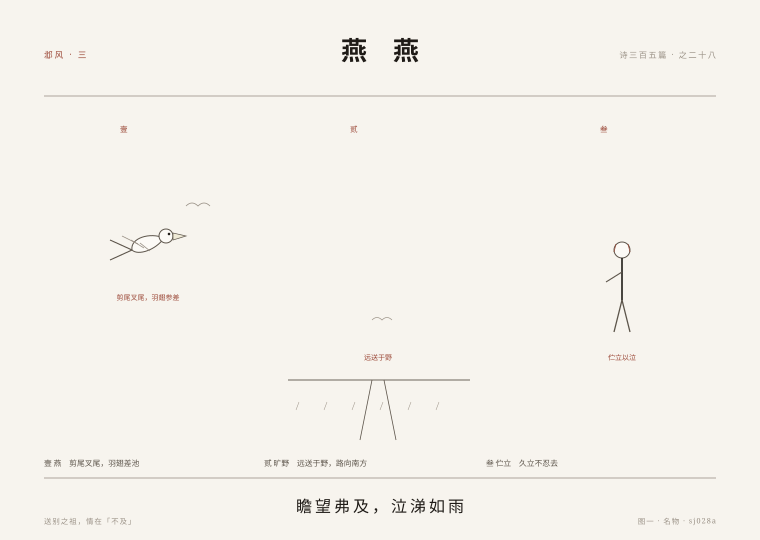
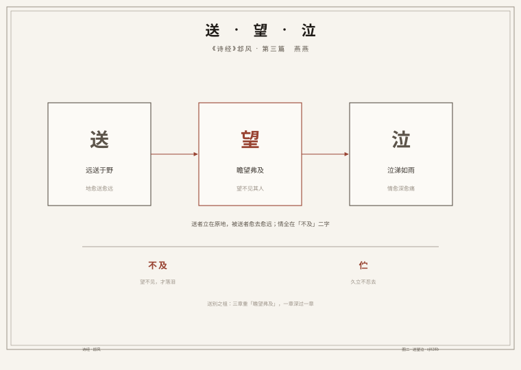

第二十八篇 燕燕
邶风 · 之三 SJ028
朗读 · 普通话
依经文原文朗读，章次不读出；配古琴底乐，不改速、不加拖腔。全库同一音色（豆包 TTS），非播音员录制。
一 解题
诗三判：
- 谁在说：一个送人的人。前三章反复说「送」与「望」，末章忽然开口赞被送者的为人——说话人与被送者至亲，不是路人。
- 说什么事：一位女子出嫁（一说归宁），送人者远送至野、至南，瞻望而看不见了，泣涕如雨。末章追述女子之贤：可信、深长、温惠、淑慎。
- 为何编在此：邶风开卷已由「守」转「变」。召南诸篇写备、敬、守、不争，此篇却写一桩离别——送别之哀，是「变风」先声。编在此处，见《诗》由家礼之成，转入人情之变。
《毛序》：「《燕燕》，卫庄姜送归妾也。」——以为庄姜送别戴妫归陈。
朱子《诗集传》：「详见前篇（《序》）。盖庄公无子，妾戴妫生子完，庄姜以为己子。庄公卒，完立，是为桓公。州吁弑之，戴妫大归于陈，庄姜送之，作此诗。」——朱子从毛序补出史事脉络。
本库的看法：这首诗的骨在「瞻望弗及，泣涕如雨」——送别之情，全在「不及」二字。
人已走远，望不见了，眼泪才落下来；前三章三写「瞻望弗及」，一章深过一章。至于是庄姜送戴妫，还是兄妹姊妹相别，史事可存，诗里真正成立的是「送别」这一情境：送者立在原地，被送者越去越远。
二 经文
第一章
燕燕于飛，差池其羽。之子于歸，遠送于野。瞻望弗及，泣涕如雨。
第二章
燕燕于飛，頡之頏之。之子于歸，遠于將之。瞻望弗及，佇立以泣。
第三章
燕燕于飛，下上其音。之子于歸，遠送于南。瞻望弗及，實勞我心。
第四章
仲氏任只，其心塞淵。終溫且惠，淑慎其身。先君之思，以勗寡人。
分章：毛传、朱子皆四章，章六句。前三章章法全同：先写燕飞，再写「之子于归」，再写瞻望与泣劳；第四章换骨——不再写景写送，直赞其人，由送别转入追念。
三 韵读
| 一 |
羽、野、雨 |
魚部 |
| 二 |
頏、將（陽部）；泣（緝部） |
陽部／緝部 |
| 三 |
音、南、心 |
侵部 |
| 四 |
淵、身、人（真部）；惠（質部）；勗（沃部） |
真部为主 |
一章魚部沉而缓，正合远送、泪落；二章「颃、将」阳部扬起来，「泣」字入声独收，声断；三章侵部闭口，像声音闷在心里；四章真部收束在人身上。全篇落脚声是「不及」——望不见，才哭。
四 字义与名物
- 燕燕——燕子。重言，状其一双双往来。
- 于——语助，用于动词前。
- 差池（cī
chí）——参差，长短不齐之貌。不是「差错」。
- 羽——羽翼。
- 之子——这位女子。
- 于歸——出嫁。归，女子以夫家为归。不是「回去」之泛说。
- 遠——遥远。
- 野——郊外。
- 瞻望——远望。瞻，向上看。
- 弗及——赶不上、看不到。及，追及。
- 泣涕——泪落。泣，无声落泪；涕，泪。
- 頡之頏之（xié
háng）——颉，上飞；颃，下飞。一上一下。
- 將——送。远于将之，远远地送她。
- 佇立（zhù）——久立。伫，久立等待。不是「临时站一站」。
- 下上其音——声音忽高忽低。
- 南——南郊（一说卫之南方）。
- 實勞我心——实在使我心忧劳。
- 仲氏——仲，排行第二；氏，女子之称。仲氏，犹「二姑娘」。
- 任只——任，可信、可大（《毛传》「任，大」）；只，语助。不是「担任」。
- 塞淵——塞，实；渊，深。诚实而深长。
- 終溫且惠——终，既；温，和；惠，顺。既温和又慈惠。
- 淑慎其身——淑，善；慎，谨慎。善而谨慎地持身。
- 先君之思——思及先君（已故之父或夫）。
- 勗（xù）——勉，勉励。
- 寡人——寡德之人，妇人谦称（一说国君谦称）。
五 今译
第一章
燕子双双飞，翅膀参差不齐。这位女子要出嫁，远远送她到郊外。望了又望看不见了，眼泪落得像雨一样。
第二章
燕子双双飞，一上一下地翻飞。这位女子要出嫁，远远地送她一程。望了又望看不见了，久久站着哭。
第三章
燕子双双飞，鸣声忽高忽低。这位女子要出嫁，远远送她到南边。望了又望看不见了，真使我心忧劳。
第四章
二姑娘为人可信，心地诚实而深长。既温和又慈惠，善而谨慎地持身。她想着先君，以此勉励我这寡德之人。
译注：「差池」译「参差不齐」，不取「差错」；「伫」译「久久站着」，见送者不忍去；「任」译「可信」，兼取「大」之义；「塞渊」译「诚实深长」，塞为实、渊为深，不可拆作「阻塞深渊」。
六 章旨
一章：送于野，泣如雨。郊外已远，泪始如雨。
二章：久立而泣。送得更远，站得更久；由「泣涕如雨」收到「伫立以泣」。
三章：心劳。送至于南，望不见，伤情落到心上。
四章：赞其人。不写别，写被别者之贤；送别之情，归于对人的敬重。
前三章是「送」的三段：野—将之—南，地愈远；雨泣—伫立—心劳，情愈深。第四章一转，把这一片离别落到一个人的德性上——正因她值得敬重，送才这样难舍。
此篇与召南《鹊巢》《采蘩》的「备、敬、守、不争」正成对照：彼写礼之成，此写情之变。
七 诗教
- 赋：前三章直陈送别之事，燕飞只是眼前所见；事与情并陈，是赋。
- 观：可观一「情」。全诗不称礼、不称德，先写一个「望不见」的动作——人情之真，在动作上见。
- 群：至亲相别，送者与被送者同属一家一族；离别之所以动人，正因二人本是「群」里的人。
- 怨：无怨怼人，只怨路远、怨「不及」。末章转作勉励，哀而不失其正。
八 分寸与边界
- 不可把「差池」解作「差错」「差池」。它是参差，写燕子羽毛长短不齐的飞翔之态。
- 不可把「于归」解作一般的「回家」。于归专指女子出嫁，归夫家。
- 不可把「伫」解作随便站立。伫是久立，是送者迟迟不忍离去。
- 不可把「任只」的「任」解作「担任」「责任」。任是可信、可大；只是语助。
- 不可把此篇坐实为庄姜与戴妫的史事而只讲宫闱恩怨。毛序、朱子所附史事可存为一说；诗之本位是送别之情，不应被史事盖过。
九 存疑
- 所送何人：毛序以为庄姜送归妾戴妫；一说兄送妹出嫁；一说妇人送娣媵。本库不坐实，只取「至亲送别」。
- 「归」是出嫁还是归宁：一说女子出嫁于归，一说归宁（回娘家后再返）。末章称「寡人」「先君之思」，近于国君夫人；本库两存。
- 「仲氏」之指：仲为排行第二，一说指戴妫，一说指送者自己。本库从「被送者为仲氏」。
- 「南」为南方还是南郊：一说南方之国（陈在卫南），一说南郊。本库取远送于南，不核地理。
- 「寡人」口吻：一说国君谦称，一说妇人谦称。说话人身份因前说而异，本库存录两说。
十 跨典
- 《邶风·泉水》「驾言出游，以写我忧」——同卷女子思归之诗；彼为未行之思，此为已别之送。
- 《鄘风·载驰》「载驰载驱，归唁卫侯」——许穆夫人归卫，同为女子远行而牵系故国；一往一返，情皆沉。
- 《小雅·采薇》「昔我往矣，杨柳依依；今我来思，雨雪霏霏」——后世离别与怀归的大章法，意象正与本篇「瞻望弗及」一脉。
- 《文选·江淹〈别赋〉》「黯然销魂者，唯别而已矣」——送别一途，此篇为《诗》中之祖；后世赋别，皆从此「不及」二字生出。
- 《礼记·檀弓上》「孔子哭子路于中庭」——古人重至亲之哭，本篇「泣涕如雨」「伫立以泣」，正是哭从情出、不掩于礼。
十一 双卡与图
双卡五对：
| 差池（参差） |
差错（误训） |
| 于归（出嫁） |
回去（泛说） |
| 伫（久立） |
暂立（误训） |
| 塞渊（实深） |
阻塞深渊（误训） |
| 瞻望弗及 |
伫立以泣 |

图一 · 燕羽·旷野·伫立 名物图

图二 · 送·望·泣 义理图
读图三处：
- 燕用剪尾与叉尾，不求全鸟写实：名物图只取三处特写——翼羽参差、上下翻飞之尾、鸣声高下；燕子小而远，画全鸟反失真。
- 旷野与路：一章「远送于野」，郊野开阔；三章「远送于南」，路向南方延伸。图上送者立处近，被送者与燕皆在远处。
- 「不及」是全篇之眼：三章皆以「瞻望弗及」领起泣与劳；图义理三格
送—望—泣，箭头由近及远，终落在「不及」上。